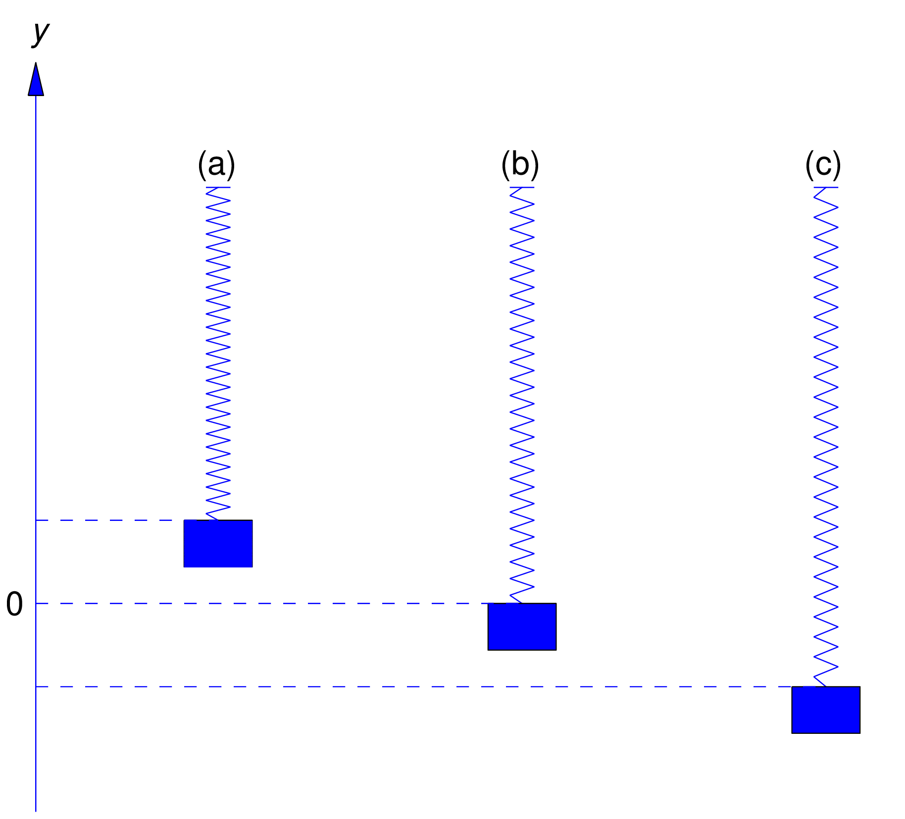
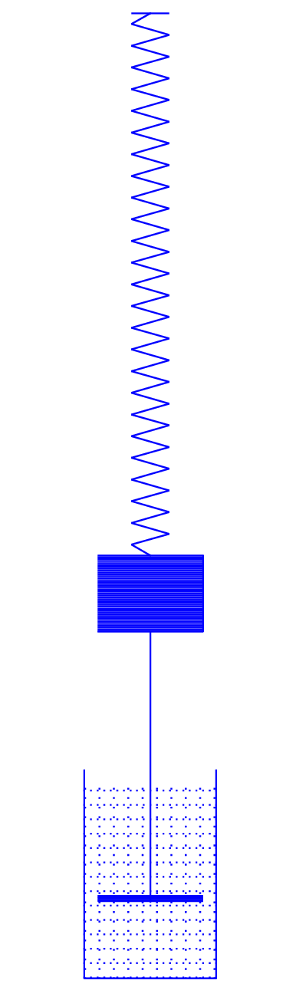
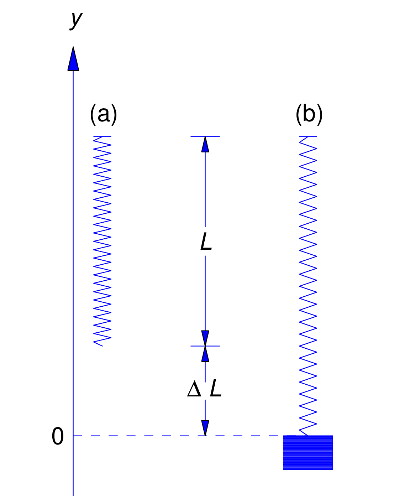
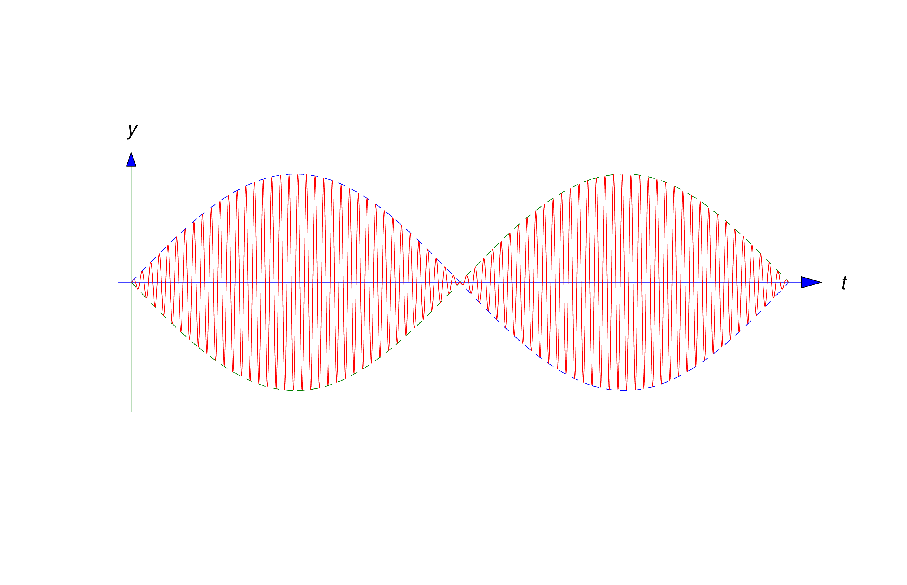
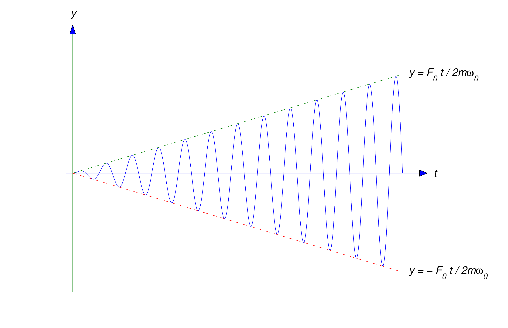

We consider the motion of an object of mass \(m\), suspended from a spring of negligible mass. We say that the spring–mass system is in equilibrium when the object is at rest and the forces acting on it sum to zero. The position of the object in this case is the equilibrium position. We define \(y\) to be the displacement of the object from its equilibrium position (Figure 6.1.1), measured positive upward.

Figure 6.1.1
\(y>0\)
\(y=0\)
\(y<0\)
Our model accounts for the following kinds of forces acting on the object:
The force \(F_g=-mg\), due to gravity
A force \(F_s=k\Delta L\) exerted by the spring resisting change in its natural length (its length with no mass attached) governed by Hooke’s law, where \(k\) is a positive number called the spring constant. If the spring is stretched then \(\Delta L>0\) and \(F_s>0\), so the spring force is upward, while if the spring is compressed then \(\Delta L<0\) and \(F_s<0\), so the spring force is downward
A damping force \(F_d=-c \dot{y} \) that resists the motion with a force proportional to the velocity of the object. It may be due to air resistance or friction in the spring. However, a convenient way to visualize a damping force is to assume that the object is rigidly attached to a piston with negligible mass immersed in a cylinder (called a dashpot) filled with a viscous liquid (Figure 6.1.2). As the piston moves, the liquid exerts a damping force. We say that the motion is undamped if \(c=0\), or damped if \(c>0\)
An external force \(F_1\), other than the force due to gravity, that may vary with \(t\), but is independent of displacement and velocity. We say that the motion is free if \(F\equiv 0\), or forced if \(F\not \equiv 0\).

Figure 6.1.2A spring–mass system with damping
From Newton’s second law of motion \(\sum F = ma \) and rewriting \(a\) as \(\ddot{y}\) the second time derivative of position:
\begin {align} \label {eq:6.1.1}
m a = & \quad F_g + F_d + F_s + F_1 \nonumber \\
m \ddot{y} = & -mg-c \dot{y} + F_s + F_1
\end {align}
To write this as a solvable differential equation, we must now relate \(F_s\) to \(y\). In the absence of external forces the object stretches the spring by an amount \(\Delta l\) to assume its equilibrium position (Figure 6.1.3).

Figure 6.1.3
Natural length of spring
Spring stretched by mass
Since the sum of the forces acting on the object is then zero, Hooke’s Law implies that \(mg=k\Delta l\). If the object is displaced \(y\) units from its equilibrium position, the total change in the length of the spring is \(\Delta L=\Delta l-y\), so Hooke’s law implies that
\[ F_s = k\Delta L = k(\Delta l-y) = k\Delta l-ky\]
Substituting this into (6.1.1) yields
\[ m \ddot{y} =-mg - c \dot{y} + k\Delta l- ky + F_1 \]
Since \(mg=k\Delta l\) this can be written as
\begin {align}
m \ddot{y} =& -mg - c \dot{y} + k\Delta l- ky + F_1 \nonumber \\
m \ddot{y} =& -mg - c \dot{y} + mg- ky + F_1 \nonumber \\
m \ddot{y} =& - c \dot{y} - ky + F_1 \nonumber \\
\end {align}
And finally collecting all the \(y\) and derivative terms on the left we have
\begin {align} \label {eq:6.1.2}
m \ddot{y} + c \frac{dy}{dx} +ky = & F_1 \\
\end {align}
We call (6.1.2) the equation of motion
Undamped Free Motion
Throughout the rest of this section we’ll consider spring–mass systems without damping, that is, when \(c=0\) so the equation of motion (6.1.2) becomes
\begin {align*}
m \ddot{y} +ky = & F_1 \\
\end {align*}
We first consider the case where there is no external force acting on the object (i.e. the motion free), that is, when \(F_1=0\) so the equation of motion (6.1.2) becomes
\begin {align*}
m \ddot{y} +ky = & 0 \\
\end {align*}
An object stretches a spring 6 inches in equilibrium.
Set up the equation of motion to model this problem
Solve the equation to find its general solution
Set up an IVP if the object is initially displaced 18 inches above equilibrium and given a downward velocity of 3 ft/s
Solve the IVP
Solution
Again setting \(c=0\) for no damping and \(F_1=0\) for no external forces in (6.1.2) the equation of motion for this situation is
\begin {align*}
m \ddot{y} +ky = & 0 \\
\end {align*}
Which we can simplify by dividing by \(m\) to obtain
\begin {align} \label {eq:6.1.3}
\ddot{y} + \frac{k}{m} y = & 0 \\
\end {align}
We know \(\Delta l = 6\) inches and \(g=32\) ft/s\(^2\) so we can use \(mg=k \Delta l\) to find \(k/m\)
\begin {align*}
mg = & k \Delta l \\
g = & \frac{k}{m} \Delta l
\Longrightarrow
\frac{k}{m} = \frac{g}{\Delta l}
\end {align*}
Before substituting in the values note that \(g=32\) ft/s\(^2\) so we convert 18 inches to feet
\begin {align*}
6 \,\text{in}
\left(\frac{1\, \text{ft}}{12 \, \text{in}}\right)
= \frac{6}{12}\, \text{ft}
= \frac{1}{2}\, \text{ft}
\end {align*}
Substituting in the values we obtain \(k/m\)
\begin {align*}
\frac{k}{m} = \frac{g}{\Delta l}
=
\frac{32}{1/2}
= 64
\end {align*}
Finally substituting this back in to (6.1.3) we obtain the equation to model this problem
\begin {equation} \label {eq:6.1.4}
\ddot{y} + 64y = 0
\end {equation}
We recognize (6.1.4) as a second order constant coefficient differential equation (Section 5.2) which we can solve by guessing solutions of the form \(y=e^{rt}\)
Differentiate \(y=e^{rt}\) twice
Substitute into (6.1.4) and find the characteristic equation
We solve the characteristic equation and find
\begin {align*}
r^2 + 64 = & 0 \\
r = & \pm 8i \\
\end {align*}
So we obtain \(y=e^{8it}\) and \(y=e^{-8it}\) which results in the general solution of
\begin {equation} \label {eq:6.1.5}
y=c_1\cos 8t+c_2\sin 8t
\end {equation}
Verify \(y=c_1\cos 8t+c_2\sin 8t \) is a solution of (6.1.4)
We already found the equation (6.1.4) for the IVP
\begin {equation*}
\ddot{y} + 64y = 0
\end {equation*}
The initial conditions are given in the problem statement. The object is initially displaced 18 inches above equilibrium, meaning \(y(0)=18\) inches and the object is initially given a downward velocity of 3 ft/s meaning \(\dot{y}(0)=-3\)
Again we will convert the inches to feet:
\begin {align*}
18 \,\text{in}
\left(\frac{1\, \text{ft}}{12 \, \text{in}}\right)
= \frac{18}{12}\, \text{ft}
= \frac{3}{2}\, \text{ft}
\end {align*}
So we have our IVP
\begin {equation*}
\ddot{y} + 64y = 0
\quad y(0)=\frac{3}{2}
\quad \dot{y}(0) = -3
\end {equation*}
To solve the IVP, we already solved the equation and found the general solution (6.1.5)
\begin {equation*}
y=c_1\cos 8t+c_2\sin 8t
\end {equation*}
Now we simply apply the initial conditions.
Evaluate \( y=c_1\cos 8t+c_2\sin 8t \) at the initial condition \(y(0)=\frac{3}{2}\)
Evaluate \( \dot{y} = 8 c_2\cos 8t -8 c_1\sin 8t \) at the initial condition \( \dot{y}(0) = -3\)
Evaluating (6.1.5) and (6.1.6) at the initial conditions we obtain \(c_1=3/2\) and \(c_2=-3/8\) so we obtain the particular solution
\begin {equation*}
y= \frac{3}{2} \cos 8t - \frac{3}{8} \sin 8t
\end {equation*}
The equation which describes the displacement of the object in feet.
We’ll now consider undamped free motion where \(m\) and \(k\) are arbitrary positive numbers.
\[ m \ddot{y} + ky = 0 \]
As we did in Example 6.1.1 we'll start by dividing by \(m\) to obtain
\[ \ddot{y} + \frac{k}{m}y = 0 \]
Now we will rename the constant \({k}/{m}\) to \(\omega_0^2\)
\[ \ddot{y} + \omega_0^2 \, y = 0 \]
Solve \(\ddot{y} + \omega_0^2 \, y = 0 \)
We can solve this equation the same way we did in Example 6.1.1 to obtain the general solution
\begin {equation} \label {eq:6.1.7}
y=c_1\cos \omega _0t+c_2\sin \omega _0 t
\end {equation}
Verify \(y=c_1\cos \omega _0t+c_2\sin \omega _0 t \) is a solution of \(\ddot{y} + \omega_0^2 \, y = 0 \)
Now if we define
\begin {equation} \label {eq:6.1.8}
R=\sqrt {c_1^2+c_2^2}
\end {equation}
Then we can make the substitution
\begin {equation} \label {eq:6.1.9}
c_1=R\cos \theta \quad\quad c_2=R\sin \theta
\end {equation}
Substitute \(c_1=R\cos \theta\) and \(c_2=R\sin \theta\) into (6.1.8) and verify \(R=\sqrt {c_1^2+c_2^2}\)
Substitution \(c_1=R\cos \theta\) and \(c_2=R\sin \theta\) into (6.1.7) we obtain
\begin {align*}
y = & \overset{c_1}{\overbrace{R\cos \theta}} \cos \omega _0t + \overset{c_2}{\overbrace{R\sin \theta}} \sin \omega _0 t \\
y = & R \Big( \cos \omega _0t \cos \theta + \sin \omega _0 t \sin \theta \Big) \\
\end {align*}
Which we can simplify by applying the trig identity
\[
\cos(\alpha - \beta) = \cos \alpha \cos \beta + \sin \alpha \sin \beta
\]
with \(\alpha = \omega _0 t \) and \(\beta = \theta \) so we can rewrite (6.1.7) as
\begin {align} \label {eq:6.1.10}
y = & R \cos \left(\omega _0 t - \theta \right)
\end {align}
But notice that (6.1.8) and (6.1.9) are simply the polar coordinates \((R,\theta)\) for a point \((c_1,c_2)\) so given \(c_1\) and \(c_2\), we can compute \(R\) from (6.1.8)
Solve (6.1.9) for \( \sin \theta\) and \( \cos \theta\)
Substitute (6.1.8) into the expressions for \( \sin \theta\) and \( \cos \theta\)
Rearranging (6.1.8) and (6.1.9) we have a relationship between \(\theta \) and the constants \(c_1\) and \(c_2\)
\[
\cos \theta ={c_1\over \sqrt {c_1^2+c_2^2}}\quad \mbox{ and } \quad \sin \theta = {c_2\over \sqrt {c_1^2+c_2^2}}
\]
There are infinitely many angles \(\theta \), differing by integer multiples of \(2\pi \), that satisfy these equations. We will always choose \(\theta \)
in the interval \([-\pi,\pi)\) i.e. \(-\pi \le \theta <\pi \)
The motion described by (6.1.7) and (6.1.10) is called simple harmonic motion which is periodic, with period
\[ T=\frac{2\pi}{\omega _0}\]
This is the time required for the object to complete one full cycle of oscillation (for example, to move from its highest position to its lowest position and back to its highest position). Since the highest and lowest positions of the object are \(y=R\) and \(y=-R\), we say that \(R\) is the amplitude of the oscillation. The angle \(\theta \) in (6.1.10) is the phase angle and is measured in radians. We call (6.1.10) the amplitude–phase form of the displacement. When \(t\) is in seconds and \(\omega _0\) is in radians per second then \(\omega _0\) is the frequency of the motion; it is also called the natural frequency of the spring–mass system without damping.
Comparing our equation with (6.1.7)
\begin {align*}
y = & c_1\cos \omega _0 t + c_2\sin \omega _0 t \\
y= & \frac{3}{2} \cos 8t - \frac{3}{8} \sin 8t
\end {align*}
We have
\[
c_1 = \frac{3}{2}
\quad
c_2 = - \frac{3}{8}
\quad
\omega _0 = 8
\]
The frequency is \[\omega _0=8 \quad \text{rad/s} \]
The period is
\[ T=\frac{2\pi}{ \omega _0}
=\frac{2\pi}{ 8}
=\frac{\pi}{ 4} \]
The amplitude is
\[ R=\sqrt {c^2_1+c^2_2}=\sqrt {\left ({3\over 2}\right )^2+\left (-{3\over 8}\right )^2}
=\sqrt {153\over 64}
={3\over 8}\sqrt {17}\]
The phase angle is determined by
\begin {align} \label {eq:6.1.11}
\cos \theta
= & \frac{c_1}{R} \nonumber \\
= & {{3\over 2}\over {3\over 8}\sqrt {17}} \nonumber \\
= & {4\over \sqrt {17}}
\Longrightarrow
\theta = \cos^{-1} \left({4\over \sqrt {17}} \right)
\approx 0.24498
\end {align}
and
\begin {align} \label {eq:6.1.12}
\sin \theta
= & \frac{c_2}{R} \nonumber \\
= & {-{3\over 8}\over {3\over 8}\sqrt {17}} \nonumber \\
= & -{1\over \sqrt {17}}
\Longrightarrow
\theta = \sin^{-1} \left(-{1\over \sqrt {17}} \right)
\approx -0.24498
\end {align}
Since cosine is positive and sine is negative, that puts the angle \(\theta\) in quadrant IV so the angle is \( \theta = \sin^{-1} \left(-{1 / \sqrt {17}} \right)
\approx -0.24498\) radians
The natural length of a spring is 1 m. An object is attached to it and the length of the spring increases to 102 cm when the object is in equilibrium.
Set up the equation of motion to model this problem
Solve the equation to find its general solution
Set up an IVP if the object is initially displaced downward 1 cm and given an upward velocity of 14 cm/s
Solve the IVP
Identify \( c_1,\) \(c_2,\) and \( \omega _0 \)
Find the frequency, period, and amplitude
Find the phase angle
Solution
Again setting \(c=0\) for no damping and \(F_1=0\) for no external forces in (6.1.2) the equation of motion for this situation is
\begin {align*}
m \ddot{y} +ky = & 0 \\
\end {align*}
Which again we simplify by dividing by \(m\) to obtain
\begin {align*}
\ddot{y} + \frac{k}{m} y = & 0 \\
\end {align*}
Since the natural length of the spring is 1 m and it is stretched to 102 cm, then we have \(\Delta l = 2\) cm and \(g=980\) cm/s\(^2\) so just as in Example 6.1.2 we can use \(mg=k \Delta l\) to find \(k/m\)
\begin {align*}
mg = & k \Delta l
\Longrightarrow
\frac{k}{m} = \frac{g}{\Delta l}
= \frac{980}{2}
= 490
\end {align*}
Finally substituting this back in we obtain the equation to model this problem
\begin {equation*}
\ddot{y} + 490y = 0
\end {equation*}
We recognize this as a second order constant coefficient differential equation (Section 5.2) which we can solve by guessing solutions of the form \(y=e^{rt}\)
Differentiate \(y=e^{rt}\) twice
Substitute into \(\ddot{y} + 490y = 0\) and find the characteristic equation
We solve the characteristic equation and find
\begin {align*}
r^2 + 490 = & 0 \\
r = & \pm 7i \sqrt{10} \\
\end {align*}
So we obtain \(y=e^{7i \sqrt{10}t}\) and \(y=e^{-7i \sqrt{10}t}\) which results in the general solution of
\begin {equation*}
y=c_1\cos 7 \sqrt{10}t+c_2\sin 7 \sqrt{10}t
\end {equation*}
Verify \(y=c_1\cos 7 \sqrt{10}t+c_2\sin 7 \sqrt{10}t \) is a solution of \(\ddot{y} + 490y = 0 \)
We already found the equation for our IVP
\begin {equation*}
\ddot{y} + 490y = 0
\end {equation*}
The initial conditions are given in the problem statement. The object is initially displaced 1 cm below equilibrium, meaning \(y(0)=-1\) cm and the object is initially given an upward velocity of 14 ft/s meaning \(\dot{y}(0)=14\) so we have our IVP
\begin {equation*}
\ddot{y} + 490y = 0
\quad y(0)=-1
\quad \dot{y}(0) = 14
\end {equation*}
To solve the IVP, we already solved the equation and found the general solution
\begin {equation*}
y=c_1\cos 7 \sqrt{10}t+c_2\sin 7 \sqrt{10}t
\end {equation*}
Now we simply apply the initial conditions.
Evaluate \( y=c_1\cos 7 \sqrt{10}t+c_2\sin 7 \sqrt{10}t \) at the initial condition \(y(0)=-1\)
Evaluating \(y\) and \(\dot{y}\) at the initial conditions we obtain \(c_1=-1\) and \(c_2=2/\sqrt{10}\) so we obtain the particular solution
\begin {equation*}
y= -\cos 7 \sqrt{10}t + \frac{2}{\sqrt{10}}\sin 7 \sqrt{10}t
\end {equation*}
The equation which describes the displacement of the object in cm.
Comparing our equation with (6.1.7)
\begin {align*}
y = & c_1\cos \omega _0 t + c_2\sin \omega _0 t \\
y= & -\cos 7 \sqrt{10}t + \frac{2}{\sqrt{10}}\sin 7 \sqrt{10}t
\end {align*}
We have
\[
c_1 = -1
\quad
c_2 = \frac{2}{\sqrt{10}}
\quad
\omega _0 = 7 \sqrt{10}
\]
The frequency is \[\omega _0=7 \sqrt{10} \quad \text{rad/s} \]
The period is
\[ T=\frac{2\pi}{ \omega _0}
=\frac{2\pi}{ 7 \sqrt{10}}
\]
The amplitude is
\[ R=\sqrt {c^2_1+c^2_2}=\sqrt {\left ({-1}\right )^2+\left (-{\frac{2}{\sqrt{10}}}\right )^2}
=\sqrt {1 + \frac{2}{5}}
=\sqrt {7\over 5}
\]
The phase angle is determined by
\begin {align*}
\cos \theta
= & \frac{c_1}{R} \nonumber \\
= & {{-1} \div \sqrt {7\over 5} } \nonumber \\
= & -\sqrt {5\over 7}
\Longrightarrow
\theta = \cos^{-1} \left(-\sqrt {5\over 7} \right)
\approx 2.57765
\end {align*}
and
\begin {align*}
\sin \theta
= & \frac{c_2}{R} \nonumber \\
= & \frac{2}{\sqrt{10}} \div \sqrt {7\over 5} \nonumber \\
= & \sqrt {\frac{2}{7}}
\Longrightarrow
\theta = \sin^{-1} \left(\sqrt {\frac{2}{7}} \right)
\approx 0.56394
\end {align*}
Since cosine is negative and sine is positive, that puts the angle \(\theta\) in quadrant II so the angle is \( \theta = \cos^{-1} \left({ - \sqrt {5}/ \sqrt {7}} \right)
\approx 2.57765 \) radians
Undamped Forced Motion
In many mechanical problems a device is subjected to periodic external forces. For example, soldiers marching in cadence on a bridge cause periodic disturbances in the bridge, and the engines of a propeller driven aircraft cause periodic disturbances in its wings. In the absence of sufficient damping forces, such disturbances, even if small in magnitude, can cause structural breakdown if they are at certain critical frequencies. To illustrate, this we’ll consider the motion of an object in a spring–mass system without damping, subject to an external force \(F_1\) where \(F_0\) is a constant:
\[ F_1=F_0\cos \omega t \]
In this case the equation of motion (6.1.2) is
\[ m \ddot{y} + ky = F_0\cos \omega t \]
which we divide by \(m\) and rewrite as
\[ \ddot{y} + \frac{k}{m}y = \frac{F_0}{m}\cos \omega t \]
And then finally rename the constant \(k/m\) to \(\omega _0^2\) so we have
\begin {equation} \label {eq:6.1.13}
\ddot{y} + \omega _0^2y = {F_0\over m} \cos \omega t
\end {equation}
The next two examples illustrate that the solutions of (6.1.13) with \(\omega \ne \omega _0\) behave very differently from the solutions with \(\omega =\omega _0\)
Given that \(\omega \ne \omega _0\) solve the IVP
\begin {equation} \label {eq:6.1.14}
\ddot{y} + \omega _0^2 y = {F_0\over m}\cos \omega t
\quad y(0)=0
\quad \dot{y}(0)=0
\end {equation}
Solution
We begin by solving the complementary equation
\begin {equation*}
\ddot{y} + \omega _0^2 y = 0
\end {equation*}
Thus the general solution is
\begin {align*}
y = c_1 \cos \omega_0 + c_2 \sin \omega_0
\end {align*}
Now we solve the nonhomogeneous equation (6.1.13) using the
method of undetermined coefficients from Section 5.3 and Section 5.5
\begin {align*}
\ddot{y} + \omega _0^2 y = \underset{f(t)}{\underbrace{{F_0\over m}\cos \omega t}}
\end {align*}
Since the forcing function \(f(t) = (F_0/ m) \cos \omega t\) is a cosine with argument \(\omega t\) and the complementary solution is cosine with argument \(\omega_0 t\) where \(\omega_0 \ne \omega\) then we can guess a particular solution of the form
\begin {align*}
y_p = A \cos \omega t + B \sin \omega t
\end {align*}
Differentiate \( y_p = A \cos \omega t + B \sin \omega t \) twice
Differentiating our particular solution guess we obtain
\begin {align*}
\dot{y}_p = & \omega B \cos \omega t -\omega A \sin \omega t \\ \\
\ddot{y}_p = & -\omega^2 A \cos \omega t - \omega^2 B \sin \omega t \\
\end {align*}
Substituting our particular solution guess and its derivatives into our nonhomogeneous equation (6.1.13)
\begin{array}{rrr}
\ddot{y}_p &=& -\omega^2 A \cos \omega t &-& \omega^2 B \sin \omega t \\
+ \quad\quad\quad \omega_0^2 {y}_p &=& \omega_0^2 A \cos \omega t &+& \omega_0^2 B \sin \omega t \\
\hline
\underbrace{{\small \ddot{y}_p + \omega_0^2 {y}_p}} \\
\displaystyle \frac{F_0}{m} \quad &=& {{\small \Big(\omega_0^2-\omega^2\Big) }} A \cos \omega t &-& {{\small \Big(\omega_0^2-\omega^2\Big) }} B \sin \omega t \\
\end{array}
Thus we obtain the equation
\begin {align*}
(\omega _0^2-\omega ^2)
\Big (A\cos \omega t+ B\sin \omega t\Big)
={F_0\over m}\cos \omega
\end {align*}
Dividing by \((\omega _0^2-\omega ^2)\) we obtain
\begin {align*}
A\cos \omega t+ B\sin \omega t
={F_0\over m (\omega _0^2-\omega ^2)}\cos \omega
\end {align*}
Equating the coefficients we obtain
\[
A={F_0\over m(\omega _0^2-\omega ^2)}
\quad \text{ and } \quad
B=0
\]
Substituting back in we obtain our particular solution
\begin {align*}
y_p = {F_0\over m(\omega _0^2-\omega ^2)} \cos \omega t
\end {align*}
Verify \( y_p = \displaystyle{F_0\over m(\omega _0^2-\omega ^2)} \cos \omega t \) is a solution of (6.1.13)
And general solution
\begin {equation} \label {eq:6.1.15}
y={F_0\over m(\omega _0^2-\omega ^2)}\cos \omega t +c_1\cos \omega _0 t+c_2\sin \omega _0t
\end {equation}
Verify \( y=\displaystyle{F_0\over m(\omega _0^2-\omega ^2)}\cos \omega t +c_1\cos \omega _0 t+c_2\sin \omega _0t \) is a solution of (6.1.13)
Now we simply apply the initial conditions \(y(0)=0\) and \(\dot{y}(0)=0\)
Evaluate \( y=\displaystyle{F_0\over m(\omega _0^2-\omega ^2)}\cos \omega t +c_1\cos \omega _0 t+c_2\sin \omega _0t \) at the initial condition \(y(0)=0\)
From (6.1.20) we can regard \(y\) as a sinusoidal variation with frequency \((\omega _0+\omega )/2\) and variable amplitude \(|R(t)|\). In Figure 6.1.6 the dashed curve above the \(t\) axis is \(y=|R(t)|\), the dashed curve below the \(t\) axis is \(y=-|R(t)|\), and the displacement \(y\) appears as an oscillation bounded by them. The oscillation of \(y\) for \(t\) on an interval between successive zeros of \(R(t)\) is called a beat.

Figure 6.1.6Undamped oscillation with beats
Since the magnitude of sine is always less than one, from (6.1.20) and (6.1.21) we have that
\[ |y|\le {2|F_0|\over m|\omega _0^2-\omega ^2|}\] moreover, if \(\omega +\omega _0\) is sufficiently large compared with \(\omega -\omega _0\), then \(|y|\) assumes values close to (perhaps equal to) this upper bound during each beat. However, the oscillation remains bounded for all \(t,\) which assumes that the spring can withstand deflections of this size and continue to obey Hooke’s law. The next example shows that this isn’t so if \(\omega =\omega _0\)
Find the general solution of
\begin {equation} \label {eq:6.1.22}
\ddot{y} + \omega _0^2 y = {F_0\over m}\cos \omega _0t
\end {equation}
Solution
We begin by solving the complementary equation
\begin {equation*}
\ddot{y} + \omega _0^2 y = 0
\end {equation*}
Solve \( \ddot{y} + \omega _0^2 y = 0 \)
From Example 6.1.4 the general solution is
\begin {align*}
y = c_1 \cos \omega_0 + c_2 \sin \omega_0
\end {align*}
Now we solve the nonhomogeneous equation (6.1.22) using the
method of undetermined coefficients from Section 5.5 Example 5.5.2
\begin {align*}
\ddot{y} + \omega _0^2 y = \underset{f(t)}{\underbrace{{F_0\over m}\cos \omega_0 t}}
\end {align*}
Since the forcing function \(f(t) = (F_0/ m) \cos \omega_0 t\) is a cosine with argument \(\omega_0 t\) and the complementary solution is cosine with the same argument \(\omega_0 t\) then we can guess a particular solution of the form
\begin {align} \label {eq:6.1.23}
y_p = At \cos \omega t + Bt \sin \omega t
\end {align}
Differentiate \( y_p = At \cos \omega t + Bt \sin \omega t \) twice
Differentiating our particular solution guess we obtain
\begin {align} \label {eq:6.1.24}
\dot{y}_p = & \Big( \omega_0 B t + A \Big) \cos \omega t + \Big( -\omega_0 A t + B \Big) \sin \omega t \nonumber \\ \nonumber \\
\ddot{y}_p = & \Big( 2 \omega_0 B - \omega_0^2 A t \Big) \cos \omega t - \Big( 2 \omega_0 A + \omega_0^2 B t \Big) \sin \omega t \\
\end {align}
Substituting our particular solution guess and its derivatives into our nonhomogeneous equation (6.1.22)
\begin{array}{rrr}
\ddot{y}_p &=& {\small \Big( 2 \omega_0 B - \omega_0^2 A t \Big)} \cos \omega t &-& {\small \Big( 2 \omega_0 A + \omega_0^2 B t \Big)} \sin \omega t \\
+ \quad\quad\quad \omega_0^2 {y}_p &=& {\small \omega_0^2 A } \,\, \cos \omega t &+& {\small \omega_0^2 B } \,\, \sin \omega t \\
\hline
\underbrace{{\small \ddot{y}_p + \omega_0^2 {y}_p}} \\
\displaystyle \frac{F_0}{m}\cos \omega_0 t &=& {{\small 2 \omega_0 B }} \,\, \cos \omega t &-& {{\small 2 \omega_0 A }} \,\, \sin \omega t \\
\end{array}
Thus we obtain the equation
\begin {align*}
2 \omega_0
\Big( B \cos \omega t -
A \sin \omega t \Big)
={F_0\over m} \cos \omega_0 t
\end {align*}
Dividing by \(2 \omega_0 \) we obtain
\begin {align*}
B \cos \omega t -
A \sin \omega t
={F_0\over 2 m \omega_0} \cos \omega_0 t
\end {align*}
Equating the coefficients we obtain
\[
A=0
\quad \text{ and } \quad
B={F_0\over 2 m \omega_0}
\]
Substituting back in we obtain our particular solution
\begin {align*}
y_p = {F_0 t\over 2 m \omega_0} \sin \omega_0 t
\end {align*}
Verify \( y_p = \displaystyle{F_0 t\over 2 m \omega_0} \sin \omega_0 t \) is a solution of (6.1.22)
And general solution
\begin {equation*}
y={F_0 t\over 2 m \omega_0} \sin \omega_0 t + c_1\cos \omega _0 t+c_2\sin \omega _0t
\end {equation*}
Verify \( y=\displaystyle{F_0 t\over 2 m \omega_0} \sin \omega_0 t +c_1\cos \omega _0 t+c_2\sin \omega _0t \) is a solution of (6.1.13)
The graph of \(y_p = \displaystyle{F_0 t\over 2 m \omega_0} \sin \omega_0 t\) is shown in Figure 6.1.7, where it can be seen that \(y_p\) oscillates between the dashed lines \[ y={F_0t\over 2m\omega _0}\quad \mbox{ and } \quad y=-{F_0t\over 2m\omega _0} \] with increasing amplitude that approaches \(\infty \) as \(t\to \infty \). Of course, this means that the spring must eventually fail to obey Hooke’s law and thus break.

Figure 6.1.7Unbounded displacement due to resonance
This phenomenon of unbounded displacements of a spring–mass system in response to a periodic forcing function at its natural frequency is called resonance. More complicated mechanical structures can also exhibit resonance–like phenomena. For example, rhythmic oscillations of a suspension bridge by wind forces or of an airplane wing by periodic vibrations of reciprocating engines can cause damage or even failure if the frequencies of the disturbances are close to critical frequencies determined by the parameters of the mechanical system in question.